Jogos
933

O termo "box-to-box" sempre pareceu pequeno demais para definir o que os olhos testemunharam ao longo de 933 partidas. 442 gols e 588 assistências — mais de mil participações diretas em gols. Um meia que tratava a grande área adversária como jardim particular. Passou pela Bavária, pela Catalunha, por Paris e pelo Rio de Janeiro carregando o mesmo DNA: disciplina, poesia e entrega absoluta. O grande Balón de Ouro eterno. Escobar não conquistou apenas estádios. Conquistou o tempo.
Uma carreira espalhada por ligas enormes da América do Sul e da Europa, com identidade visual própria em cada escudo.

Início vencedor com Libertadores, Brasileirão e muita criação ofensiva.

Passagem intensa com volume criativo e força em noites europeias.
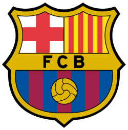
Grande auge técnico com LaLiga, Copa do Rey e brilho continental.

Nova fase de elite com empilhamento de taças em Paris.
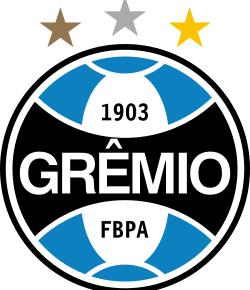
Trecho curto, intenso e com impacto direto em competição eliminatória.

Seleção sem troféus, mas com consistência em ciclos longos e grandes torneios.


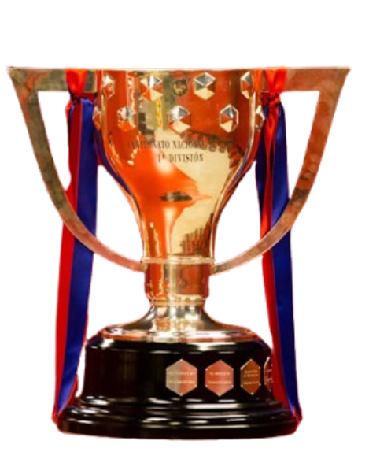
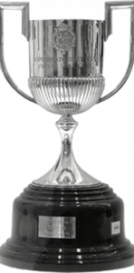
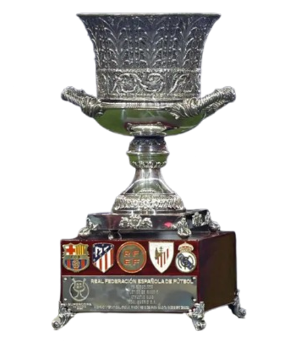


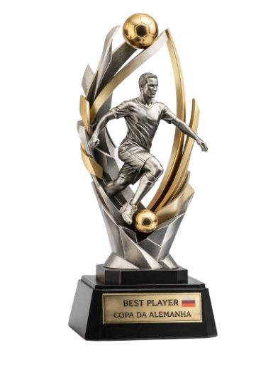
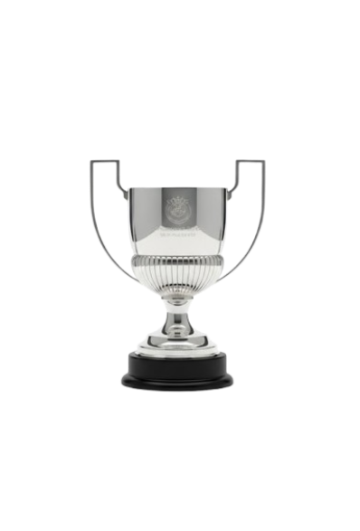
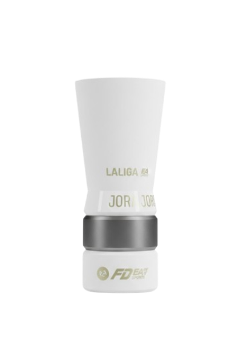
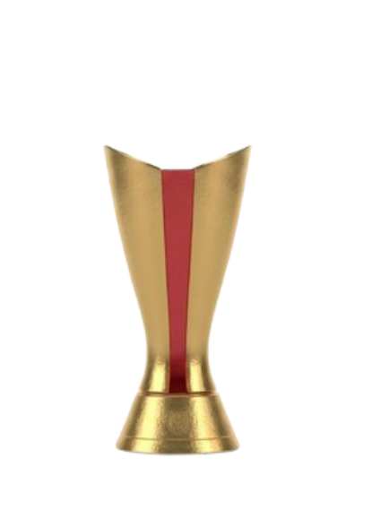
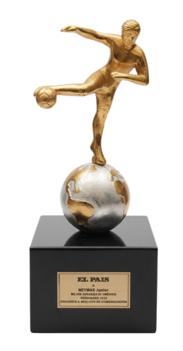


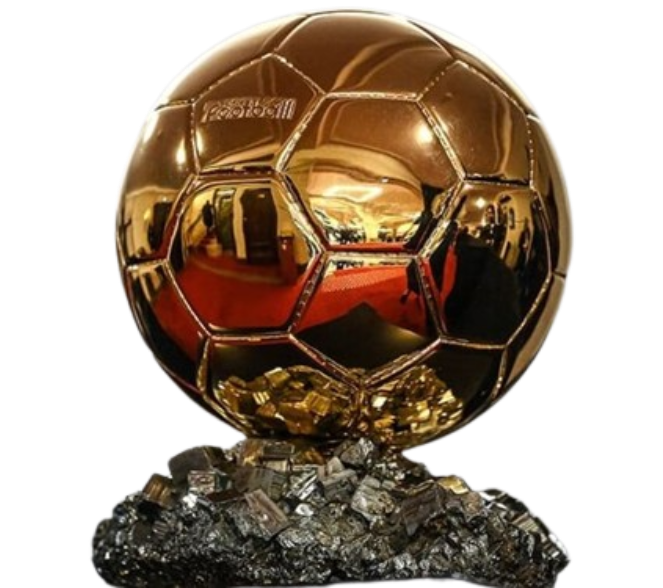
O termo "box-to-box" sempre pareceu pequeno demais para definir o que os olhos testemunharam ao longo de 933 partidas. Escobar não ocupava apenas uma faixa do campo; ele parecia dobrar o espaço e o tempo à sua própria vontade, como se existissem três jogadores habitando o mesmo corpo. Era defensor, maestro e carrasco. Uma trindade técnica que desafiava qualquer lógica do futebol moderno.
As lesões, que para tantos significam o fim, para ele eram apenas interrupções dramáticas em uma sinfonia de resistência. Cada cicatriz parecia acrescentar uma nova camada à sua lenda. Ver aquele homem conviver com dores crônicas e ainda alcançar a marca de quase mil partidas era compreender que sua força jamais esteve apenas nos músculos, mas em algo muito mais raro: uma vontade inquebrável.
Os números parecem irreais até hoje: 442 gols e 588 assistências. Um meia com mais de mil participações diretas em gols não é apenas um grande jogador; é uma anomalia estatística, um fenômeno raro que tratava a grande área rival como seu jardim particular.
Na Bavária, encontrou a disciplina dos campeões. Na Catalunha, sua alma encontrou poesia. Paris apresentou outro desafio — e ele mostrou ter grandeza para suportar qualquer cenário, governando o futebol europeu com autoridade.
E então veio o retorno às raízes sul-americanas. No Vasco da Gama, sob a sombra mística de São Januário, Escobar encontrou seu encerramento perfeito. A Barreira pulsou junto com ele. Entre suor, cânticos e a Cruz de Malta estampada no peito, escreveu os capítulos finais de uma carreira cinematográfica.
E o que dizer de sua história com a Bolívia? Talvez tenha faltado o título que coroaria definitivamente um dos maiores jogadores de todos os tempos. Mas existem homens que não precisam de troféus para alcançar a imortalidade. Seu nome já está gravado para sempre na memória de um povo, na alma de uma geração e na história do futebol.
Escobar não conquistou apenas estádios. Conquistou o tempo.
O grande Balón de Ouro eterno.